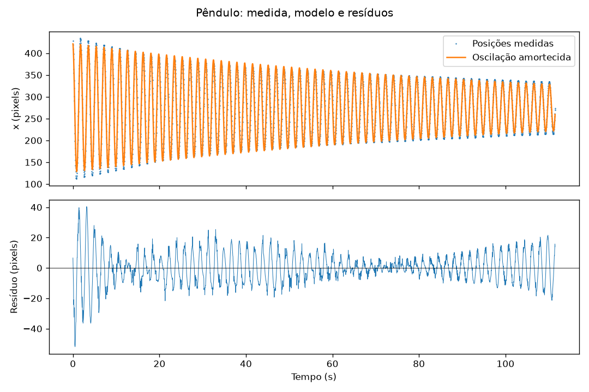

2.1 A montagem e os vídeos
Uma bolinha suspensa por um fio oscila diante da câmera. A trena serve de referência espacial. Posicione a câmera perpendicular ao plano do movimento e meça o comprimento do ponto de suspensão ao centro da bolinha.
Dê play no vídeo original: o alvo acompanha o centro reconhecido e o gráfico desenha x(t). Pausar ou mudar o instante do vídeo atualiza os três painéis juntos.
Vídeo original
Centro reconhecido
Posição ao longo do tempo
A marcação usa os centros já extraídos pelo filtro HSV do script 06, sincronizados com o vídeo. O alvo indica a posição do centro; seu tamanho não representa o raio da bolinha. O gráfico mantém a mesma escala vertical para tornar visível a redução da amplitude.
| Arquivo | Uso em aula | Atenção |
|---|---|---|
| pendulo_livre.mp4 | Visualizar amortecimento | Comprimento não é o 0,83 m adotado para a trena |
| pendulo_trena.mp4 | CSV e ajuste desta página | Comprimento adotado: 0,83 m |
| pendulo_trena_vertical.mp4 | Comparar outra tomada | Há outro impulso perto de 110 s; analisar separadamente |
2.2 Do vídeo à tabela
Para um vídeo com taxa constante, reconstruímos o tempo pelo índice do quadro: \(t_n=n/f\). Esse relógio deve avançar mesmo quando a máscara não encontra a bolinha. Apagar as linhas sem detecção é diferente de comprimir o tempo.
O resultado é saidas/trajetoria.csv, com três colunas: tempo em segundos e x/y em pixels. O programa termina no fim do vídeo ou ao pressionar q.
python scripts/06_trajetoria.pyCódigo completo (44 linhas)
"""Vídeo de taxa constante → CSV. Execute na pasta do tópico; Q salva e sai."""
from pathlib import Path
import cv2
import numpy as np
FONTE = "videos/pendulo_trena.mp4"
MINIMO = (0, 120, 120)
MAXIMO = (25, 255, 255)
video = cv2.VideoCapture(FONTE)
fps = video.get(cv2.CAP_PROP_FPS)
if not video.isOpened() or fps <= 0:
video.release()
raise SystemExit("Vídeo não abriu ou não informa FPS válido.")
dados = []
numero = 0
while True:
leu, quadro = video.read()
if not leu:
break
tempo = numero / fps
numero += 1 # O relógio avança mesmo se a detecção falhar.
hsv = cv2.cvtColor(quadro, cv2.COLOR_BGR2HSV)
mascara = cv2.inRange(hsv, MINIMO, MAXIMO)
contornos, _ = cv2.findContours(mascara, cv2.RETR_EXTERNAL, cv2.CHAIN_APPROX_SIMPLE)
if contornos:
maior = max(contornos, key=cv2.contourArea)
if cv2.contourArea(maior) > 30:
(x, y), raio = cv2.minEnclosingCircle(maior)
dados.append((tempo, x, y))
cv2.circle(quadro, (int(x), int(y)), int(raio), (0, 255, 0), 2)
cv2.imshow("Trajetoria", quadro)
if cv2.waitKey(1) == ord("q"):
break
video.release()
cv2.destroyAllWindows()
if not dados:
raise SystemExit("Nenhuma posição detectada; reveja a faixa HSV.")
Path("saidas").mkdir(exist_ok=True)
np.savetxt("saidas/trajetoria.csv", dados, delimiter=",",
header="t_s,x_px,y_px", comments="", fmt="%.6f")
print(f"{len(dados)} posições em {numero} quadros; FPS declarado: {fps:.6f}.")
print("Arquivo: saidas/trajetoria.csv")Para começar direto pela análise, baixe o CSV já extraído do vídeo da trena em dados/pendulo_trena.csv. Foram detectadas 3.379 posições em 3.379 quadros nesta execução, usando a faixa HSV do capítulo 1.
Qual é o relógio?
Arquivos podem carregar timestamps e ter taxa variável; nesse caso, contar quadros e dividir por um FPS médio distorce o tempo. Para webcam, meça os instantes de aquisição: o ritmo do processamento não é necessariamente o ritmo da câmera. O script desta aula está limitado a um arquivo de taxa constante.
2.3 Período, amortecimento e gravidade
Antes do ajuste, abra os primeiros dez segundos da trajetória. Use o zoom da janela para medir a distância entre dois picos ou divida o intervalo de vários ciclos pelo número de ciclos.
python scripts/07_visualizar_trajetoria.pyCódigo completo (15 linhas)
"""Veja os primeiros ciclos antes de escolher o período inicial do ajuste."""
import numpy as np
import matplotlib.pyplot as plt
ARQUIVO = "dados/pendulo_trena.csv"
dados = np.loadtxt(ARQUIVO, delimiter=",", skiprows=1, ndmin=2)
tempo = dados[:, 0] - dados[0, 0]
posicao = dados[:, 1]
plt.plot(tempo, posicao, ".-", markersize=2)
plt.xlim(0, 10)
plt.xlabel("Tempo (s)")
plt.ylabel("x (pixels)")
plt.title("Estime o período pela distância entre picos")
plt.show()
O primeiro gráfico é x(t). Estime a separação entre picos; esse valor inicia o ajuste. Para pequenas oscilações com amortecimento fraco, usamos:
\[x(t)=x_0+A\,e^{-t/\tau}\cos\left(\frac{2\pi t}{T}+\varphi\right)\]
A é a amplitude inicial, τ é o tempo de decaimento, T é o período, φ é a fase e x₀ é a posição de equilíbrio. Em um intervalo τ, o envelope cai para 1/e do valor anterior. O algoritmo ajusta esses números para reduzir os resíduos entre dados e modelo.
Medindo o comprimento L do pêndulo simples, a aproximação de pequenos ângulos fornece:
\[g\approx\frac{4\pi^2 L}{T^2}\]
O período medido de um sistema amortecido aproxima o período natural apenas quando o amortecimento é fraco. Uma oscilação grande, movimento fora do plano ou atrito diferente do modelo podem exigir outra descrição.
Este exemplo lê somente o CSV. Altere ARQUIVO, COMPRIMENTO e PERIODO_INICIAL no início; o ajuste usa os tempos registrados, inclusive se houver lacunas.
python -m pip install -r requirements-medida.txt
python scripts/07_pendulo.pyCódigo completo (50 linhas)
"""Ajusta o CSV do vídeo da trena; execute na pasta do tópico."""
from pathlib import Path
import numpy as np
import matplotlib.pyplot as plt
from scipy.optimize import curve_fit
ARQUIVO = "dados/pendulo_trena.csv" # Troque por saidas/trajetoria.csv.
COMPRIMENTO = 0.83 # Metros, do ponto de suspensão ao centro da bolinha.
PERIODO_INICIAL = 1.8 # Estime a distância entre picos no gráfico de x(t).
dados = np.loadtxt(ARQUIVO, delimiter=",", skiprows=1, ndmin=2)
if len(dados) < 10 or dados.shape[1] != 3 or not np.isfinite(dados).all():
raise SystemExit("O CSV precisa de pelo menos 10 posições válidas: t, x, y.")
tempo = dados[:, 0] - dados[0, 0]
posicao = dados[:, 1]
if np.any(np.diff(tempo) <= 0):
raise SystemExit("Os tempos precisam estar em ordem crescente.")
def oscilacao(t: np.ndarray, amplitude: float, tau: float,
periodo: float, fase: float, centro: float) -> np.ndarray:
envelope = amplitude * np.exp(-t / tau)
return centro + envelope * np.cos(2 * np.pi * t / periodo + fase)
chute = [np.ptp(posicao) / 2, 100, PERIODO_INICIAL, 0, np.mean(posicao)]
limites = ([0, 0.01, 0.1, -2 * np.pi, -np.inf],
[np.inf, 100000, 10, 2 * np.pi, np.inf])
parametros, _ = curve_fit(oscilacao, tempo, posicao, p0=chute,
bounds=limites, maxfev=20000)
amplitude, tau, periodo, fase, centro = parametros
ajuste = oscilacao(tempo, *parametros)
residuo = posicao - ajuste
gravidade = 4 * np.pi**2 * COMPRIMENTO / periodo**2
print(f"Período: {periodo:.4f} s; amortecimento: {tau:.1f} s")
print(f"g estimado: {gravidade:.3f} m/s²; comprimento adotado: {COMPRIMENTO} m")
print(f"Desvio padrão dos resíduos: {np.std(residuo):.2f} px")
figura, eixos = plt.subplots(2, 1, sharex=True, figsize=(9, 6))
eixos[0].plot(tempo, posicao, ".", markersize=1, label="Posições medidas")
eixos[0].plot(tempo, ajuste, label="Oscilação amortecida")
eixos[0].set_ylabel("x (pixels)")
eixos[0].legend()
eixos[1].plot(tempo, residuo, linewidth=0.6)
eixos[1].axhline(0, color="black", linewidth=0.5)
eixos[1].set(xlabel="Tempo (s)", ylabel="Resíduo (pixels)")
figura.suptitle("Pêndulo: medida, modelo e resíduos")
figura.tight_layout()
Path("saidas").mkdir(exist_ok=True)
figura.savefig("saidas/ajuste_pendulo.png", dpi=120)
plt.show()
2.4 O que a medida permite concluir
Um gráfico bem ajustado não prova que todas as entradas estão corretas. Resíduos com estrutura podem indicar movimento fora do modelo, detecção enviesada ou mudança nas condições. O desvio padrão dos resíduos não é, por si só, a incerteza de g.
- Espaço: pixels só viram metros com uma referência no mesmo plano. Perspectiva, distorção da lente e definição do centro afetam a escala.
- Tempo: FPS incorreto afeta o período. Quadros perdidos na detecção deixam lacunas; uma FFT direta pressupõe amostras regulares e requer cuidado nesse caso.
- Modelo: grandes amplitudes e impulsos adicionais podem invalidar um único ajuste.
Para incertezas pequenas e independentes em L e T:
\[\frac{\sigma_g}{g}\approx\sqrt{\left(\frac{\sigma_L}{L}\right)^2+\left(2\frac{\sigma_T}{T}\right)^2}\]
Hipótese, não correção automática. Interpretar este vídeo como 30 FPS, em lugar de 30,303030, aumentaria T e levaria a g ≈ 9,833 m/s². A proximidade de um valor de referência não comprova que 30 FPS seja a taxa real. Precisamos de evidência independente sobre a gravação.
Investigue: altere o comprimento em 1% e compare g. Depois discuta o efeito de um erro de 1% no relógio. Qual grandeza precisa de maior atenção relativa?
2.5 Uma extensão geométrica
Se a câmera vê o plano do pêndulo sem distorção importante, os centros da bolinha descrevem aproximadamente um arco. Ajustar uma circunferência pode estimar o pivô fora da imagem e o comprimento em pixels. Arcos muito curtos tornam essa estimativa instável; perspectiva pode transformar a projeção em outra curva.
Essa extensão existe no script original de ajuste. Aqui, o exemplo principal usa o comprimento medido diretamente para manter clara a passagem de posição para período e gravidade.